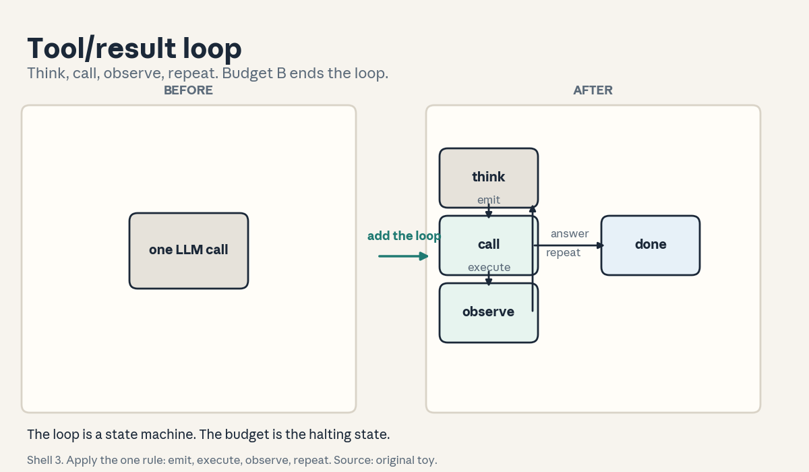
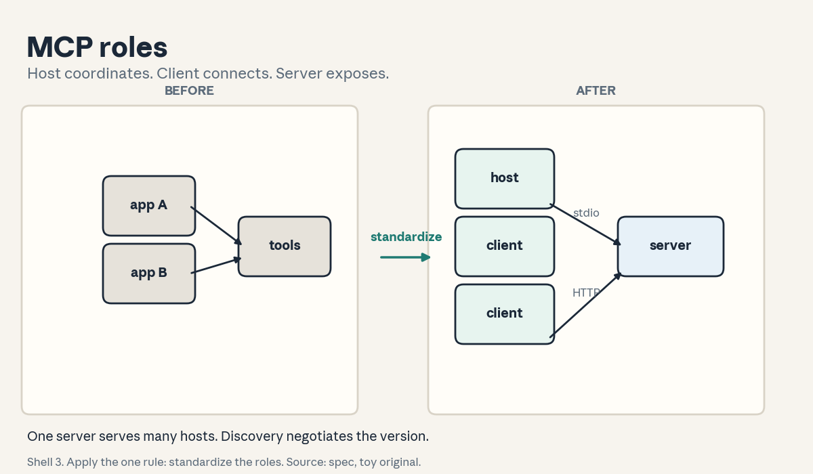
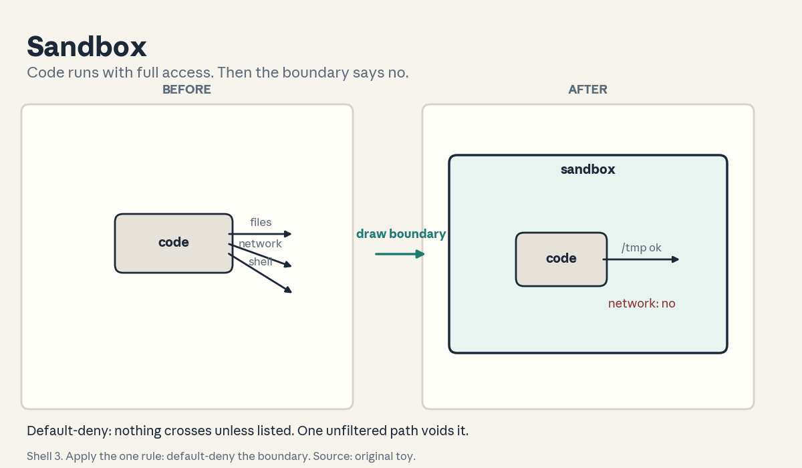
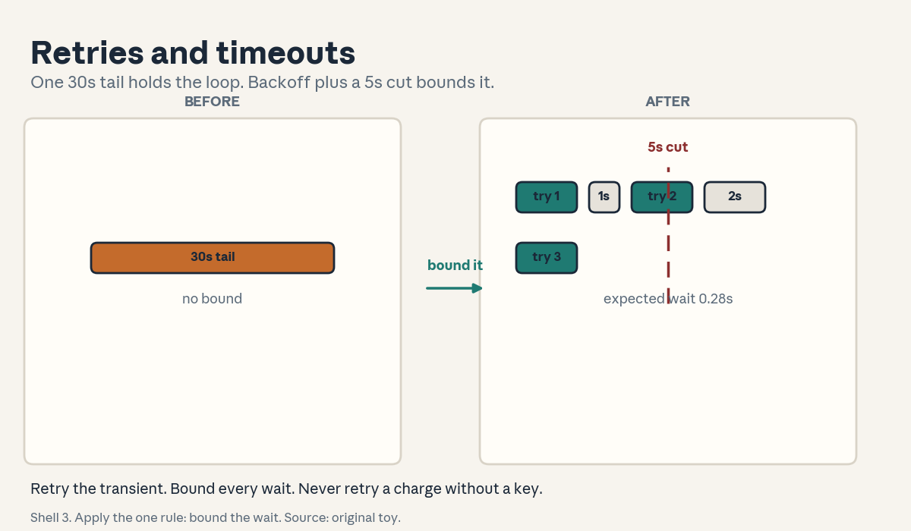
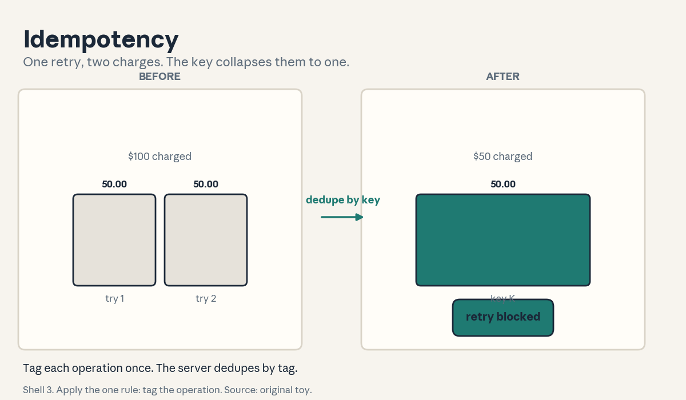
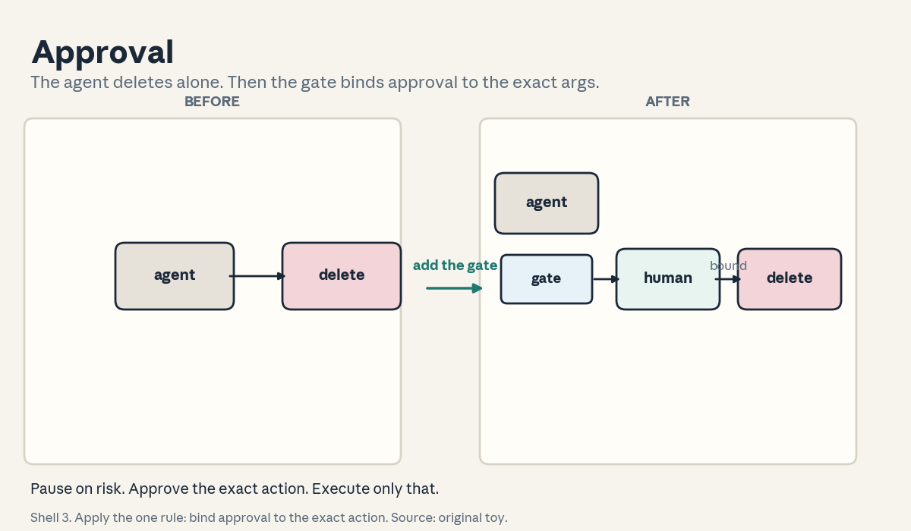

U03 · Tools, protocols, and runtime safety
U03: Tools, protocols, and runtime safety
Prerequisites: P16 (distributed), P20 (tools), P21 (security). Local remediation opens this lesson.
Provenance
Concepts C01, C02, C04, C06, C08, C12 map to session S04, “Tool Use and Function Calling” (5 Oct 2026): source-supported at schedule-title level (schedule inspected. Slide deck not opened). C04 additionally uses the MCP architecture page (SRC-05, inspected full). C12 additionally uses the Anthropic article’s tool-design guidance (SRC-04, inspected full). Concepts C03, C05, C07, C09, C10, C11 are requested extensions: PLANNED / SOURCE ATTRIBUTION PENDING, taught as independent theory.
Local remediation: JSON, HTTP, and state machines
JSON: the data format for tool arguments and results. Objects {“name”: “value”}, arrays, strings, numbers, booleans, null. A schema describes the allowed shape. Validation checks a value against the schema.
HTTP: the request/response protocol. A client sends a request (method, path, headers, body). A server returns a response (status code, body). Status 200 means success. 4xx means the client erred. 5xx means the server erred. Timeouts and retries (C07, C08) exist because networks fail.
State machine: a set of states, a set of transitions, and a rule that picks the next state from the current state plus input. A run is a path through states. A halting state ends the run. The tool/result loop (C03) is a state machine with states {think, call, observe, done}.
Authentication vs authorization: authentication proves who you are (a key, a token). Authorization decides what you may do (a permission). A valid key with no permission gets a 403. The lesson never merges the two.
Russian-doll ladder for the major mechanism (the tool/result loop)
- Shell 0: How does a model use a tool it cannot run itself?
- Shell 1: Toy: one calculator tool, question “what is 6*7”. Two steps: call, observe.
- Shell 2: State s_t, action a_t in {call(f, args), answer(text)}, observation o_t. Policy pi maps state to action.
- Shell 3: Rule: the model emits a call, the runtime executes it, the result returns as an observation, the model continues.
- Shell 4: Derive the loop as a state machine. Implement it in 20 lines with a stub tool.
- Shell 5: Check: with no tools the loop reduces to one answer step. With a stub that echoes, the observation equals the call arguments.
- Shell 6: Change one factor: the tool sleeps 10s and the timeout is 2s. Predict the loop sees a timeout error. Measure it.
- Shell 7: Counterexample: a tool that returns a different result on every call (nondeterministic). The model’s plan cannot rely on the observation.
- Shell 8: Compare with MCP-mediated calls (C04) under equal tools. Same loop, standardized transport and discovery.
- Shell 9: Extension: does a schema-checked loop beat a free-text loop on task success? Falsifiable: run both on 100 toy tasks and compare.
- Shell 10: Production: every loop needs a step budget and a timeout (C07, C12 in U04). The stakeholder decision is the max cost per task.
Not-yet-understood dependency list
- How the model decides which tool to call: answered in C02 via schema descriptions.
- Why retries can charge twice: answered in C09.
- Who approves a risky call: answered in C10.
cs329z-U03-C01: REPL
Contract 1. Source mapping, scope, objectives, dependencies. Maps to S04 (“the REPL”). Objective: define the read-eval-print loop and its role as the code-execution tool. Depends on P02 only.
Contract 2. Motivating question and tiny toy. Question: the agent needs to compute 67 and then plot the result. Toy: the REPL reads “67”, evaluates it to 42, prints “42”, and loops. The agent sends code as text and gets back text. Three steps, one loop.
Contract 3. Plain-language mental model. A REPL is a conversation with a computer. Read the input, evaluate it, print the result, repeat. As a tool, it gives the model a scratchpad that actually runs. The model writes code. The world runs it.
Contract 4. Variables, units, shapes, assumptions. Input: a code string. Output: stdout text plus an exit status. State: the session namespace persists across calls. Assumption: the code runs in a sandbox (C06). Without that assumption the REPL is a weapon.
Contract 5. Justified derivation or mechanism. The mechanism is stateful evaluation. The justification for statefulness: later calls reuse earlier variables, so multi-step analysis works. The price: state leaks between tasks unless sessions reset.
Contract 6. Computed numerical example. Toy session: call 1 defines x = [3, 1, 2]. Call 2 sorts x. Call 3 prints sum(x) = 6. Three calls, one namespace, final answer 6. If the session reset between calls, call 3 would fail with an undefined name.
Contract 7. Algorithm and minimal implementation. A REPL simulator: a dict namespace, exec() on the input inside a try, capture of stdout and exceptions. Fifteen lines. See the lab.
Contract 8. Correctness checks and expected output. Check 1: “6*7” returns “42”. Check 2: a NameError returns an error string, not a crash. Check 3: state persists across two calls. Expected: all pass.
Contract 9. Complexity, memory, statistical efficiency, stability, costs. Cost per call = execution time plus a timeout (C07). Memory = the namespace size. Unbounded sessions leak memory. Stability: infinite loops need the timeout. That is why C07 exists.
Contract 10. Nearest alternatives and selection boundaries. Alternative: single-shot code execution with no state, or a full container per task. Choose the stateful REPL for iterative analysis. Choose single-shot when tasks are independent and session hygiene matters.
Contract 11. Failure case, broken assumption, counterexample. Break the sandbox assumption: the model runs os.remove on the host. The tool works as designed and destroys data. Counterexample: two tasks share one REPL session. Task B reads task A’s variables and the answers cross-contaminate.
Contract 12. Research reading and falsifiable extension. Extension: compare task success with a stateful REPL vs single-shot execution on 50 multi-step toy tasks. Falsifiable: stateful wins on tasks needing 3+ steps and ties on 1-step tasks.
Contract 13. Assessment. Breadth: define REPL, namespace, session. Oral ladder: (1) define the three, (2) toy the x = [3,1,2] session, (3) derive why statefulness helps multi-step work, (4) implement the simulator, (5) compare with single-shot, (6) debug the cross-contamination, (7) critique the no-sandbox failure, (8) design the 50-task comparison. Transfer: a data-analysis agent. REPL or single-shot? Failure diagnosis: call 3 fails with NameError. What happened to the session? Counterfactual: what if exec is replaced by eval only? Research: should the REPL persist across users?
Contract 14. Lab and exercises. Lab U03 task 1 builds the simulator. Exercises: (E1) trace the three-call session. (E2) explain the cross-contamination. (E3) state when to reset. Keys in answer_keys/u03_keys.md.
Contract 15. Visual units, provenance, accessibility, audit rows. Figure visuals/u03_f01.png covers C01/C02/C03/C12: the loop plate with think, call, observe states. Caption: “Shell 3. Apply the one rule: emit, execute, observe, repeat. Source: original toy.” Alt text: “Left: one LLM call box. Arrow labeled emit execute observe. Right: three state boxes think, call, observe with arrows forming a loop and an exit to done.” Audit: states and transitions labeled, one rule named.

cs329z-U03-C02: function schema
Contract 1. Source mapping, scope, objectives, dependencies. Maps to S04 (“function-calling APIs”). Objective: write a tool schema the model can use to choose and call correctly. Depends on C01.
Contract 2. Motivating question and tiny toy. Question: how does the model know the calculator exists and what it takes? Toy schema: name “multiply”, description “Multiply two numbers”, parameters {“a”: number, “b”: number}, required [“a”, “b”]. The model reads the schema and emits {“a”: 6, “b”: 7}.
Contract 3. Plain-language mental model. A schema is a menu with ordering instructions. The name says what the dish is. The description says when to order it. The parameters say how. The model picks from the menu. The runtime cooks.
Contract 4. Variables, units, shapes, assumptions. Schema = (name, description, parameters, required). Call = (name, arguments). Assumption: the description is honest and complete. A lying description misroutes every call.
Contract 5. Justified derivation or mechanism. The mechanism is description-driven selection. The model scores each tool’s description against the task and picks the best match. The justification for writing good descriptions: the model never sees the implementation, only the menu.
Contract 6. Computed numerical example. Toy: 3 tools (multiply, search_docs, send_email). Task: “multiply 6 by 7”. With clear descriptions the model picks multiply with arguments {a: 6, b: 7}. With the description “does math stuff” vs “does stuff”, the pick is a coin flip. One word changes the routing.
Contract 7. Algorithm and minimal implementation. A schema registry: dict of name to schema, a validate(args, schema) function, a dispatch(name, args) function. Fifteen lines. See the lab.
Contract 8. Correctness checks and expected output. Check 1: {a: 6, b: 7} validates. Check 2: {a: 6} fails (missing b). Check 3: {a: “six”} fails (wrong type). Expected: three distinct outcomes.
Contract 9. Complexity, memory, statistical efficiency, stability, costs. Validation is O(schema size). The real cost is context: every tool schema consumes prompt tokens on every step. Ten tools at 200 tokens each = 2000 tokens of menu.
Contract 10. Nearest alternatives and selection boundaries. Alternative: MCP tools/list discovery (C04), which standardizes the menu. Choose hand-written schemas for a fixed small toolset. Choose MCP when tools come from many servers.
Contract 11. Failure case, broken assumption, counterexample. Break the honesty assumption: the description says “fast” but the tool takes 30s. The model picks it for urgent tasks and the loop times out. Counterexample: two tools named “search” and “search_docs” with overlapping descriptions. The model cannot tell them apart and picks randomly.
Contract 12. Research reading and falsifiable extension. Extension: measure call accuracy with terse vs detailed descriptions on 100 toy tasks. Falsifiable: detailed descriptions win by at least 15 points.
Contract 13. Assessment. Breadth: define schema, registry, dispatch. Oral ladder: (1) define the three, (2) toy the multiply schema, (3) derive why the model needs the description, (4) implement the registry, (5) compare with MCP discovery, (6) debug the overlapping names, (7) critique the lying description, (8) design the 100-task test. Transfer: 50 tools. How does the model choose? Failure diagnosis: the model never calls the new tool. Name two schema causes. Counterfactual: what if schemas cost zero tokens? Research: can descriptions be learned from usage?
Contract 14. Lab and exercises. Lab U03 task 2 builds the registry. Exercises: (E1) write the multiply schema. (E2) explain the coin-flip routing. (E3) compute the 2000-token menu cost. Keys in answer_keys/u03_keys.md.
Contract 15. Visual units, provenance, accessibility, audit rows. Covered by figure u03_f01 (the call state carries the schema). Logged as shared.
cs329z-U03-C03: tool/result loop
Contract 1. Source mapping, scope, objectives, dependencies. Requested extension. The runtime behind S04’s “build a tool-using system from scratch”. Objective: implement the loop as a state machine with a budget. Depends on C01, C02.
Contract 2. Motivating question and tiny toy. Question: “What is 6*7, and is 42 prime?” Toy trace: think -> call(multiply, {a:6,b:7}) -> observe(42) -> think -> call(is_prime, {n:42}) -> observe(false) -> answer(“42, not prime”). Six states, two tools, one answer.
Contract 3. Plain-language mental model. The loop is the agent’s heartbeat. Think: what do I need? Call: ask the tool. Observe: read the result. Repeat until the answer is ready or the budget dies. The model plans. The runtime acts.
Contract 4. Variables, units, shapes, assumptions. s_t state, a_t action, o_t observation, budget B steps. Transition: s_{t+1} = update(s_t, a_t, o_t). Halting: a_t = answer or t = B. Assumption: observations are trustworthy. C06 and C10 guard this.
Contract 5. Justified derivation or mechanism. The mechanism is the state machine from remediation. The justification for the budget: without it a confused model loops forever (the ladder’s shell 7). The budget turns “run until done” into “run until done or B”.
Contract 6. Computed numerical example. Toy: each step costs 500 tokens. B = 10 steps = 5000 tokens max. The 6-state trace above costs 3000 tokens. A loop with no budget on a failing tool costs unbounded tokens. With B = 10 it costs at most 5000.
Contract 7. Algorithm and minimal implementation. Loop: while t < B: a = model(s). If a is answer: return it. O = execute(a). S = update(s, a, o). T += 1. Raise BudgetExhausted at the end. Twenty lines with stub tools. See the lab.
Contract 8. Correctness checks and expected output. Check 1: the 6-state trace returns “42, not prime”. Check 2: a tool that always errors exhausts the budget and raises. Check 3: B = 0 returns immediately without calling. Expected: all pass.
Contract 9. Complexity, memory, statistical efficiency, stability, costs. Time = steps x (model call + tool time). Memory = the growing state (history). Stability: the state grows without bound. Truncate or summarize (U04).
Contract 10. Nearest alternatives and selection boundaries. Alternative: a fixed workflow (U04) with no model-chosen steps. Choose the loop when the step sequence is unpredictable. Choose the workflow when the steps are known in advance.
Contract 11. Failure case, broken assumption, counterexample. Break the trustworthy-observation assumption: the tool returns attacker-controlled text (prompt injection, U07). The model follows it. Counterexample: the model calls the same failing tool 10 times. The budget stops the bleeding but the task still fails. The loop needs the retry policy of C08.
Contract 12. Research reading and falsifiable extension. Extension: compare loop success with B = 5 vs B = 20 on 100 toy tasks. Falsifiable: success rises then plateaus. The plateau locates the sufficient budget.
Contract 13. Assessment. Breadth: define state, action, observation, budget. Oral ladder: (1) define the four, (2) toy the 6-state trace, (3) derive why the budget is necessary, (4) implement the loop, (5) compare with a fixed workflow, (6) debug the 10x repeated failing call, (7) critique the trustworthy-observation assumption, (8) design the B sweep. Transfer: a booking task with unknown steps. Loop or workflow? Failure diagnosis: the loop always hits the budget. Name two causes. Counterfactual: what if tools are free and instant? Research: can the loop learn to stop early?
Contract 14. Lab and exercises. Lab U03 task 2 implements the loop. Exercises: (E1) trace the 6 states. (E2) compute the 5000-token max. (E3) explain the injection failure. Keys in answer_keys/u03_keys.md.
Contract 15. Visual units, provenance, accessibility, audit rows. Covered by figure u03_f01. Logged as shared.
cs329z-U03-C04: MCP roles/transport/version
Contract 1. Source mapping, scope, objectives, dependencies. Maps to S04 (“the Model Context Protocol (MCP)”) and SRC-05 (inspected full). Objective: name the three roles, the two transports, and the version/discovery mechanism. Depends on C02.
Contract 2. Motivating question and tiny toy. Question: two apps want the same file-search tool. Do they each write an integration? Toy: one MCP server exposes file-search. App A (a host) and app B (another host) each create a client and connect. One server, two clients, zero duplicate integrations.
Contract 3. Plain-language mental model. MCP is USB for AI tools. The host is the computer (the AI app). The client is the port driver (one per server). The server is the device (it offers tools, resources, prompts). Plug the device in once. Every host with a driver can use it.
Contract 4. Variables, units, shapes, assumptions. Roles: host (coordinates clients), client (one connection to one server), server (exposes primitives). Transports: stdio (local process, no network) and Streamable HTTP (remote, standard HTTP auth). Data layer: JSON-RPC 2.0. Assumption: both sides speak the same protocol version. Discovery settles it.
Contract 5. Justified derivation or mechanism. The mechanism is capability discovery: the client sends server/discover, the server replies with its protocol versions and capabilities (which primitives it offers). The justification: version negotiation prevents a new client from calling methods an old server lacks.
Contract 6. Computed numerical example. Toy handshake: client offers version 2026-07-28. Server supports 2026-07-28 and older. Negotiated: 2026-07-28. tools/list returns 3 tools. tools/call invokes one. Four messages, one working tool. The spec page (SRC-05) documents this sequence.
Contract 7. Algorithm and minimal implementation. A toy handshake in pseudocode: send {“jsonrpc”: “2.0”, “method”: “server/discover”}. Parse versions. Pick the newest common. Call tools/list. Call tools/call. Fifteen lines. See the lab.
Contract 8. Correctness checks and expected output. Check 1: no common version raises a negotiation error. Check 2: tools/list before discovery still works (discovery is mandatory first per the spec). Check 3: a stdio server and an HTTP server expose the same tools/list shape. Expected: transport does not change the data layer.
Contract 9. Complexity, memory, statistical efficiency, stability, costs. Discovery is one round trip. Per-call cost = transport overhead + tool time. Stability: version drift across a fleet needs a compatibility matrix. Pin versions per deployment.
Contract 10. Nearest alternatives and selection boundaries. Alternative: hand-rolled function calling per app (C02), or a proprietary plugin API. Choose MCP when tools are shared across apps or vendors. Choose hand-rolled when one app owns all tools and the protocol overhead buys nothing.
Contract 11. Failure case, broken assumption, counterexample. Break the version assumption: the client requires a method the server’s version lacks. The call fails with “method not found”. Counterexample: a “server” that is actually a proxy to another server with different versions. Discovery lies. Calls fail downstream.
Contract 12. Research reading and falsifiable extension. Extension: measure integration time for N apps x M tools with MCP vs hand-rolled. Falsifiable: MCP wins when N x M is large. Hand-rolled wins at N = M = 1.
Contract 13. Assessment. Breadth: define host, client, server, the two transports. Oral ladder: (1) define the four, (2) toy the two-host handshake, (3) derive why discovery precedes calls, (4) sketch the handshake, (5) compare with hand-rolled schemas, (6) debug the method-not-found, (7) critique the proxy counterexample, (8) design the N x M experiment. Transfer: a local file tool and a remote search API. Which transport each? Failure diagnosis: tools/list works but tools/call fails. Name two causes. Counterfactual: what if there is one transport only? Research: how should version negotiation handle three parties?
Contract 14. Lab and exercises. Lab U03 task 3 runs the handshake. Exercises: (E1) name the three roles. (E2) explain the version error. (E3) pick transports for the two tools. Keys in answer_keys/u03_keys.md.
Contract 15. Visual units, provenance, accessibility, audit rows. Figure visuals/u03_f02.png: lesson plate, source SRC-05 plus original toy. Before: two apps with tangled direct integrations. After: hosts, clients, one server, stdio and HTTP edges labeled. Caption: “Shell 3. Apply the one rule: standardize the roles. Source: spec, toy original.” Alt text: “Left: two app boxes with crossed lines to tools. Arrow labeled standardize roles. Right: host box with two client boxes, one server box, edges labeled stdio and HTTP.” Audit: roles from the spec, toy original.

cs329z-U03-C05: authentication/authorization
cs329z-U03-C06: sandbox
Contract 1. Source mapping, scope, objectives, dependencies. Maps to S04 (“code-execution sandboxes”). Objective: define the sandbox boundary and the allow/deny policy. Depends on C01, P21.
Contract 2. Motivating question and tiny toy. Question: the REPL can run any Python. What stops os.remove? Toy: policy = {allow: [read, write /tmp, network off], deny: [all else]}. “6*7” runs. “os.remove(‘/data’)” is denied before execution. The boundary is a list, not a hope.
Contract 3. Plain-language mental model. A sandbox is a playpen with walls. Inside: the code plays. The walls: no network, no host filesystem, limited CPU and memory. The policy lists what crosses the walls. Everything else bounces.
Contract 4. Variables, units, shapes, assumptions. Policy = (allow set, deny set, resource limits). Enforcement point: before execution (syscall filter) and during (cgroup limits). Assumption: the enforcement is complete. One unfiltered path voids the sandbox.
Contract 5. Justified derivation or mechanism. The mechanism is default-deny: nothing is allowed unless listed. The justification: allow-lists fail closed (a forgotten entry blocks a feature), while deny-lists fail open (a forgotten entry allows an attack).
Contract 6. Computed numerical example. Toy: 100 code snippets, 70 benign, 30 malicious (file delete, network exfil, fork bomb). Default-deny with the toy policy: 70 run, 30 denied, 0 escapes. A deny-list with 3 rules: 70 run, 27 denied, 3 escape (the novel attacks). The arithmetic favors default-deny.
Contract 7. Algorithm and minimal implementation. A policy checker: parse the requested operations from the code (toy: string scan for known-dangerous names), check against the allow set, deny on miss. Fifteen lines, toy only. See the lab.
Contract 8. Correctness checks and expected output. Check 1: “6*7” allowed. Check 2: “os.remove” denied. Check 3: an unknown module import denied (not in the allow set). Expected: allow, deny, deny.
Contract 9. Complexity, memory, statistical efficiency, stability, costs. The check is O(code size). Real sandboxes cost a process or container per session. Stability: resource limits (CPU, memory, wall time) need C07’s timeout as well.
Contract 10. Nearest alternatives and selection boundaries. Alternative: no sandbox with code review, or a full VM per task. Choose the sandbox for all model-generated code. Choose the VM when the code needs real system access.
Contract 11. Failure case, broken assumption, counterexample. Break completeness: the sandbox filters file writes but allows subprocess with shell. The model writes through the shell. Counterexample: the policy allows /tmp writes and the model fills the disk. Resource limits are part of the boundary, not optional.
Contract 12. Research reading and falsifiable extension. Extension: run 200 adversarial snippets against the toy policy and count escapes. Falsifiable: default-deny holds at 0 escapes. Any escape is a policy bug to fix.
Contract 13. Assessment. Breadth: define sandbox, policy, default-deny. Oral ladder: (1) define the three, (2) toy the 70/30 split, (3) derive why default-deny fails closed, (4) implement the checker, (5) compare with a VM, (6) debug the subprocess bypass, (7) critique the disk-fill case, (8) design the 200-snippet test. Transfer: an agent that installs packages. What is the policy? Failure diagnosis: a benign script is denied. What do you change? Counterfactual: what if the sandbox is perfect but slow? Research: can the model detect it is sandboxed, and does it matter?
Contract 14. Lab and exercises. Lab U03 task 4 builds the checker. Exercises: (E1) compute the escape counts. (E2) explain the subprocess bypass. (E3) state the default-deny rule. Keys in answer_keys/u03_keys.md.
Contract 15. Visual units, provenance, accessibility, audit rows. Figure visuals/u03_f03.png: lesson plate, source original toy. Before: code runs with full access arrows to files and network. After: code inside a sandbox box. Only /tmp and no-network edges cross. Caption: “Shell 3. Apply the one rule: default-deny the boundary. Source: original toy.” Alt text: “Left: code box with arrows to file, network, shell. Arrow labeled draw the boundary. Right: code inside a sandbox box, one arrow to tmp, network arrow crossed out.” Audit: allow/deny lists explicit.

cs329z-U03-C07: timeouts
Contract 1. Source mapping, scope, objectives, dependencies. Requested extension. Objective: set a timeout from a latency distribution and compute what it saves. Depends on P16 at bridge level.
Contract 2. Motivating question and tiny toy. Question: a tool usually answers in 0.2s but sometimes hangs for 30s. How long do you wait? Toy distribution: P(0.2s) = 0.9, P(2s) = 0.09, P(30s) = 0.01. Expected wait without timeout: 0.9x0.2 + 0.09x2 + 0.01x30 = 0.66s. With a 5s timeout: 0.9x0.2 + 0.09x2 + 0.01x5 = 0.41s. The timeout buys 0.25s expected and caps the worst case at 5s.
Contract 3. Plain-language mental model. A timeout is a promise to stop waiting. Without it, one slow call holds the whole loop hostage. The timeout converts “maybe 30s” into “at most 5s, then an error I can handle”.
Contract 4. Variables, units, shapes, assumptions. Timeout tau in seconds. Latency distribution P(T). Expected wait with timeout: E[min(T, tau)]. Assumption: the distribution is known or estimated. Break it and the timeout is a guess.
Contract 5. Justified derivation or mechanism. The mechanism is E[min(T, tau)]: mass above tau collapses to tau. The justification: the tail is where the cost lives (0.30 of the 0.66 expected seconds came from 1 percent of calls). Cut the tail, keep the body.
Contract 6. Computed numerical example. Toy above: 0.66s to 0.41s, worst case 30s to 5s. Timeout error rate: 0.01 (the mass above 5s). If the retry policy (C08) handles the error, the user never sees it.
Contract 7. Algorithm and minimal implementation. A timeout wrapper: run the tool in a thread, join(tau), raise TimeoutError on expiry. Ten lines. See the lab.
Contract 8. Correctness checks and expected output. Check 1: a 0.2s tool returns normally. Check 2: a 30s tool raises at 5s. Check 3: the measured wait is within 0.5s of 5s. Expected: pass, raise, ~5s.
Contract 9. Complexity, memory, statistical efficiency, stability, costs. The wrapper costs one thread. The price of a tight timeout is false errors (a 6s success becomes an error). The price of a loose timeout is tail latency. Stability: set tau from measured p99, not from hope.
Contract 10. Nearest alternatives and selection boundaries. Alternative: no timeout with a step budget (the loop still ends, but one step can hang). Choose timeouts always for networked or model-driven tools. The budget bounds steps. The timeout bounds each step.
Contract 11. Failure case, broken assumption, counterexample. Break the distribution assumption: latency shifts after a deploy and p99 is now 8s. The 5s timeout errors on 5 percent of calls. Counterexample: a timeout on a non-idempotent write (C09). The call times out, the write happened, the retry double-writes.
Contract 12. Research reading and falsifiable extension. Extension: measure the latency distribution weekly and re-tune tau. Falsifiable: the timeout error rate stays under 1 percent or the tuning is wrong.
Contract 13. Assessment. Breadth: define timeout, tail latency, p99. Oral ladder: (1) define the three, (2) toy the 0.66 to 0.41 computation, (3) derive E[min(T, tau)], (4) implement the wrapper, (5) compare with a step budget alone, (6) debug the post-deploy error spike, (7) critique the non-idempotent timeout, (8) design the weekly re-tune. Transfer: a tool with unknown latency. What is your first tau? Failure diagnosis: timeout errors jump to 5 percent. Name two causes. Counterfactual: what if the tool is local and instant? Research: should tau adapt per call?
Contract 14. Lab and exercises. Lab U03 task 5 runs the simulator. Exercises: (E1) compute 0.66 and 0.41. (E2) explain the 0.01 error rate. (E3) state the p99 rule. Keys in answer_keys/u03_keys.md.
Contract 15. Visual units, provenance, accessibility, audit rows. Figure visuals/u03_f04.png covers C07/C08: attempt timeline with backoff waits and the timeout cut. Caption: “Shell 3. Apply the one rule: bound the wait. Source: original toy.” Alt text: “Left: one long bar labeled 30s tail. Arrow labeled bound the wait. Right: attempt bars with 1s, 2s waits and a 5s cut line.” Audit: waits computed, cut labeled.

cs329z-U03-C08: retries
Contract 1. Source mapping, scope, objectives, dependencies. Maps to S04 (“error handling and retries”). Objective: compute retry success and expected cost with backoff. Depends on C07.
Contract 2. Motivating question and tiny toy. Question: a call fails with probability 0.2. Is one try enough? Toy: 3 tries, independent. All-fail probability = 0.2^3 = 0.008. Success rises from 0.80 to 0.992. Two extra tries buy 19 points.
Contract 3. Plain-language mental model. A retry is a second chance with a pause. The pause (backoff) lets the failure clear: a rate limit resets, a blip passes. Immediate retry hammers a struggling server. Backoff is politeness with math.
Contract 4. Variables, units, shapes, assumptions. Fail probability p per try, max tries r, backoff waits w_1..w_{r-1}. Expected tries = 1 + p + p^2 + … + p^{r-1}. Assumption: tries are independent and the failure is transient. Break it and retries burn budget for nothing.
Contract 5. Justified derivation or mechanism. The all-fail probability p^r follows from independence. The expected-tries sum is a truncated geometric series. Backoff with jitter (randomized waits) avoids synchronized retry storms: the derivation is the same, the constant is kinder.
Contract 6. Computed numerical example. p = 0.2, r = 3, waits 1s, 2s. Expected tries = 1 + 0.2 + 0.04 = 1.24. Expected wait = 0.2x1 + 0.04x2 = 0.28s. All-fail = 0.008. Total expected cost per call: 1.24 tool runs + 0.28s of waiting.
Contract 7. Algorithm and minimal implementation. Retry loop: for i in range(r): try: return tool(). Except Transient: sleep(w_i with jitter). Raise the last error after r. Twelve lines. See the lab.
Contract 8. Correctness checks and expected output. Check 1: a tool failing twice then succeeding returns on try 3. Check 2: a permanent error (400) does not retry. Check 3: measured expected tries near 1.24 on the toy. Expected: all pass at seed 0.
Contract 9. Complexity, memory, statistical efficiency, stability, costs. Cost = expected tries x tool cost + expected wait. Stability: cap r and total wait. A retry loop inside a budgeted agent loop (C03) must fit inside B.
Contract 10. Nearest alternatives and selection boundaries. Alternative: fail fast with no retry, or failover to a backup tool. Choose retries for transient failures (5xx, timeouts, rate limits). Choose fail-fast for permanent errors (400, auth failures).
Contract 11. Failure case, broken assumption, counterexample. Break transience: the tool is down for an hour. Three tries fail. The loop wasted 0.28s and the user still waits. Counterexample: retrying a non-idempotent charge (C09). The first try succeeded slowly. The retry charges twice.
Contract 12. Research reading and falsifiable extension. Extension: measure the transient share of failures in a week of logs. Falsifiable: if under 50 percent are transient, the retry policy needs retuning.
Contract 13. Assessment. Breadth: define retry, backoff, jitter, transient. Oral ladder: (1) define the four, (2) toy the 0.008 computation, (3) derive the expected-tries sum, (4) implement the loop, (5) compare with failover, (6) debug the hour-long outage, (7) critique the double-charge, (8) design the log study. Transfer: a rate-limited API. What are w_i? Failure diagnosis: retries never help. Name two causes. Counterfactual: what if p = 0.9? Research: should the model choose r?
Contract 14. Lab and exercises. Lab U03 task 5 runs the retry simulator. Exercises: (E1) compute 0.2^3 and 1.24. (E2) explain the jitter. (E3) state the transient rule. Keys in answer_keys/u03_keys.md.
Contract 15. Visual units, provenance, accessibility, audit rows. Covered by figure u03_f04. Logged as shared.
cs329z-U03-C09: idempotency
Contract 1. Source mapping, scope, objectives, dependencies. Requested extension. The safety lock for C08. Objective: define idempotency and implement key-based dedupe. Depends on C08.
Contract 2. Motivating question and tiny toy. Question: the charge call times out. Did it run? Toy: charge $50 with idempotency key K. Try 1 times out after the server processed it. Try 2 sends the same K. The server sees K, returns the original receipt. Charged: $50 once. Without K: $100.
Contract 3. Plain-language mental model. An idempotency key is a name tag on the request. The server files results by tag. A repeated tag gets the filed result, not a new charge. The client can retry blindly. The tag makes blindness safe.
Contract 4. Variables, units, shapes, assumptions. Key k (unique per logical operation), server store mapping k to result. Effect(k) applied once no matter how many deliveries. Assumption: the key is unique per operation and the store is durable. Reused keys merge distinct operations.
Contract 5. Justified derivation or mechanism. The mechanism is exactly-once effect via at-least-once delivery plus dedupe. The justification: networks duplicate and time out. The key moves the dedupe to the server, which is the only party that knows what ran.
Contract 6. Computed numerical example. Toy: 100 charges, timeout rate 0.1, all retried once. Expected without keys: 10 double charges = $500 extra on $5000. With keys: $0 extra. The key is worth the timeout rate times the amount. The lab’s seed-0 simulator run measures exactly 10 doubles, so expectation and realization agree on this seed. The sampling standard deviation is 3, so other seeds land near, not on, the expectation. See the lab.
Contract 7. Algorithm and minimal implementation. Client: k = uuid(). Send(k, op). Server: if k in store: return store[k]. Result = run(op). Store[k] = result. Return result. Ten lines each side. See the lab.
Contract 8. Correctness checks and expected output. Check 1: two deliveries, one effect. Check 2: two different keys, two effects. Check 3: a crashed server with a durable store still dedupes after restart. Expected: all pass on the toy.
Contract 9. Complexity, memory, statistical efficiency, stability, costs. The store grows with keys. Expire them after the retry window. Stability: key generation must be unique per logical op, not per attempt. A per-attempt key defeats the whole mechanism.
Contract 10. Nearest alternatives and selection boundaries. Alternative: read-before-write (check state, then act) or natural idempotency (setting a value, not incrementing). Choose keys when the operation is not naturally idempotent (charge, send). Skip keys for reads and pure sets.
Contract 11. Failure case, broken assumption, counterexample. Break uniqueness: the client reuses one key for all charges. Every charge after the first returns the first receipt. Money is lost silently. Counterexample: the store expires keys after 1 hour but the client retries after 2. The dedupe misses and the charge doubles.
Contract 12. Research reading and falsifiable extension. Extension: chaos-test the toy (random timeouts, restarts) and count double effects. Falsifiable: zero doubles with correct keys. The count jumps when keys are per-attempt.
Contract 13. Assessment. Breadth: define idempotency, key, dedupe. Oral ladder: (1) define the three, (2) toy the $50 charge, (3) derive exactly-once from at-least-once, (4) implement both sides, (5) compare with read-before-write, (6) debug the reused key, (7) critique the expiry mismatch, (8) design the chaos test. Transfer: an email-send tool. Key or not? Failure diagnosis: double charges with keys enabled. Name two causes. Counterfactual: what if the store is in-memory only? Research: can keys be derived from the arguments?
Contract 14. Lab and exercises. Lab U03 task 6 runs the dedupe. Exercises: (E1) compute the $1000 extra. (E2) explain the reused-key failure. (E3) state the per-operation key rule. Keys in answer_keys/u03_keys.md.
Contract 15. Visual units, provenance, accessibility, audit rows. Figure visuals/u03_f05.png: lesson plate, source original toy. Before: two charge bars ($50 + $50) from one retry. After: one charge bar with the key tag, duplicate blocked. Caption: “Shell 3. Apply the one rule: tag the operation. Source: original toy.” Alt text: “Left: two charge bars labeled try 1, try 2. Arrow labeled dedupe by key. Right: one charge bar labeled key K, second try blocked.” Audit: amounts computed, dedupe logic shown.

cs329z-U03-C10: approval
Contract 1. Source mapping, scope, objectives, dependencies. Requested extension. Follows P21 (approval binding). Objective: define risk tiers and the approval gate. Depends on C03.
Contract 2. Motivating question and tiny toy. Question: the agent wants to delete a database. Should it ask? Toy tiers: read (auto), write to /tmp (auto), send email (approve), delete database (approve + second factor). The loop pauses at the gate and resumes on approval.
Contract 3. Plain-language mental model. Approval is a checkpoint with a human. Low-risk actions flow through. High-risk actions wait. The binding rule: the approved action must be exactly the executed action (no bait-and-switch between approval and execution).
Contract 4. Variables, units, shapes, assumptions. Risk tier t(action) in {auto, approve, deny}. Gate: pause, present (action, args, context), await decision. Assumption: the approver understands what they approve. Break it and the gate is a click-through ritual.
Contract 5. Justified derivation or mechanism. The mechanism is the pause-and-bind protocol: freeze the action, get a signed approval of the exact (tool, args), execute only that. The justification: without binding, the model can show “read file” and run “delete file”.
Contract 6. Computed numerical example. Toy: 100 actions, 70 auto, 25 approve, 5 deny. Approval latency 60s each. Expected added latency = 25 x 60s / 100 = 15s per action. If 2 of the 25 were attacks, the gate’s value is 2 blocked attacks for 25 minutes of human time.
Contract 7. Algorithm and minimal implementation. A gate function: tier = risk(action). If tier == auto: run. If deny: refuse. Else: present and await input. Verify the approved args match. Run. Fifteen lines. See the lab.
Contract 8. Correctness checks and expected output. Check 1: read runs without pausing. Check 2: delete pauses. Check 3: approved args tampered after approval are rejected. Expected: auto, pause, reject.
Contract 9. Complexity, memory, statistical efficiency, stability, costs. The gate costs human time, the scarcest resource. Stability: too many approvals cause fatigue and click-through. Tune tiers so the approve bucket stays small.
Contract 10. Nearest alternatives and selection boundaries. Alternative: sandbox-only (no human) or human-in-every-step. Choose tiered approval when actions vary in risk. Choose sandbox-only for fully reversible actions.
Contract 11. Failure case, broken assumption, counterexample. Break the understanding assumption: the approver cannot read the args JSON and approves blindly. The gate is theater. Counterexample: the model splits one delete into 100 “safe” writes that together destroy the data. Tiering per action misses the pattern.
Contract 12. Research reading and falsifiable extension. Extension: measure the click-through rate as the approve bucket grows from 5 to 50 per day. Falsifiable: approval quality falls as volume rises.
Contract 13. Assessment. Breadth: define tier, gate, binding. Oral ladder: (1) define the three, (2) toy the 70/25/5 split, (3) derive the bind rule, (4) implement the gate, (5) compare with sandbox-only, (6) debug the blind approver, (7) critique the split-delete, (8) design the volume experiment. Transfer: an agent that files expense reports. What are the tiers? Failure diagnosis: approvals take hours. What do you tune? Counterfactual: what if the human is never available? Research: can the model pre-screen for the approver?
Contract 14. Lab and exercises. Lab U03 task 7 implements the gate. Exercises: (E1) compute the 15s expected latency. (E2) explain the bait-and-switch. (E3) state the binding rule. Keys in answer_keys/u03_keys.md.
Contract 15. Visual units, provenance, accessibility, audit rows. Figure visuals/u03_f06.png: lesson plate, source original toy. Before: the agent acts alone on a delete. After: the gate pauses, a human approves the exact args, then it runs. Caption: “Shell 3. Apply the one rule: bind approval to the exact action. Source: original toy.” Alt text: “Left: agent box with arrow to delete box. Arrow labeled add the gate. Right: agent, gate diamond, human box, then delete box.” Audit: tiers labeled, binding shown.

cs329z-U03-C11: output contracts
Contract 1. Source mapping, scope, objectives, dependencies. Requested extension. Objective: write a contract for a tool’s results. Depends on C02.
Contract 2. Motivating question and tiny toy. Question: the search tool returns “some results”. What exactly? Toy contract: {results: [{title: string, url: string, snippet: string}], latency_p99_ms: 800, errors: [RATE_LIMIT, TIMEOUT, AUTH]}. The model knows the shape, the speed, and the failure modes before calling.
Contract 3. Plain-language mental model. An output contract is the tool’s promise about its answers. Schema: the shape. Errors: the named failure modes. Latency: the speed promise. The model plans retries and fallbacks from the contract, not from surprises.
Contract 4. Variables, units, shapes, assumptions. Contract = (result schema, error enum, latency SLA, side-effect class). Assumption: the tool honors the contract. A tool that returns new error codes without notice breaks every caller.
Contract 5. Justified derivation or mechanism. The mechanism is contract-first integration: the caller branches on the error enum, the schema validates the result, the SLA sets the timeout (C07). The justification: named errors turn “it failed” into “retry” vs “abort” vs “ask”.
Contract 6. Computed numerical example. Toy: error rates RATE_LIMIT 0.05 (retry), TIMEOUT 0.01 (retry), AUTH 0.001 (abort). A caller that retries on the enum vs a caller that aborts on any error: success 0.999 vs 0.94 on 1000 calls. The enum is worth 6 points.
Contract 7. Algorithm and minimal implementation. A contract dataclass plus a caller that switches on the error enum. Twelve lines. See the lab.
Contract 8. Correctness checks and expected output. Check 1: RATE_LIMIT triggers a retry. Check 2: AUTH aborts immediately. Check 3: a result violating the schema raises a contract error. Expected: retry, abort, raise.
Contract 9. Complexity, memory, statistical efficiency, stability, costs. The contract costs one design doc per tool. The 6-point gain has standard error sqrt(0.06 x 0.94 / 1000) = 0.0075. Stability: version the contract. Callers pin versions.
Contract 10. Nearest alternatives and selection boundaries. Alternative: free-text results with ad-hoc parsing. Choose contracts for every tool the agent calls in production. Choose free text only for exploratory one-offs.
Contract 11. Failure case, broken assumption, counterexample. Break the honor assumption: the tool adds a new error code silently. The caller’s switch falls through and the error is mishandled. Counterexample: a contract that promises p99 800ms but the tool regresses to 5s. The timeout (C07) was set from the lie.
Contract 12. Research reading and falsifiable extension. Extension: contract-test every tool weekly against its SLA. Falsifiable: any breach is a bug, not a surprise.
Contract 13. Assessment. Breadth: define result schema, error enum, SLA. Oral ladder: (1) define the three, (2) toy the 0.999 vs 0.94 numbers, (3) derive the switch logic, (4) implement the caller, (5) compare with free text, (6) debug the silent new error, (7) critique the SLA lie, (8) design the weekly test. Transfer: a payment tool. What is its contract? Failure diagnosis: retries fire on AUTH. What is wrong? Counterfactual: what if errors have no names? Research: can contracts be generated from code?
Contract 14. Lab and exercises. Lab U03 task 6 adds the contract. Exercises: (E1) compute the 6-point gap. (E2) explain the silent error. (E3) state the versioning rule. Keys in answer_keys/u03_keys.md.
Contract 15. Visual units, provenance, accessibility, audit rows. Covered by figure u03_f05 (the contract rides with the key). Logged as shared.
cs329z-U03-C12: tool design
Contract 1. Source mapping, scope, objectives, dependencies. Maps to S04 (“designing good tools”) and SRC-04 (tool interface guidance). Objective: state the rules for tools the model uses well. Depends on C02.
Contract 2. Motivating question and tiny toy. Question: two file tools: “read_file(path)” and “f(p, m)”. Toy: the model calls read_file correctly on the first try. It misuses f three times (wrong arg order, wrong mode flag). Names are UI for the model.
Contract 3. Plain-language mental model. Tool design is API design for a reader who never sees the code. Clear names, one job per tool, good descriptions, useful errors, examples. The Anthropic guidance (SRC-04): craft the tool interface through documentation and testing, like any API.
Contract 4. Variables, units, shapes, assumptions. Design axes: naming, granularity, description quality, error messages, examples. Assumption: the model reads the description. Vague tools get vague use.
Contract 5. Justified derivation or mechanism. The mechanism is the same as C02’s selection: the model matches task to description. The justification for one-job tools: a tool that does three things needs a three-way description, and the model will pick the wrong branch.
Contract 6. Computed numerical example. Toy: 100 tasks, tool A (one job, clear name): 92 correct calls. Tool B (three jobs, terse name): 61 correct calls. The design gap is 31 points on identical capability.
Contract 7. Algorithm and minimal implementation. A design checklist function: name is a verb phrase, one job, description has an example, errors are named, args under 7. It scores a schema 0-5. Ten lines. See the lab.
Contract 8. Correctness checks and expected output. Check 1: read_file scores 5. Check 2: f scores 1. Check 3: a tool with 12 args loses a point. Expected: 5, 1, 4.
Contract 9. Complexity, memory, statistical efficiency, stability, costs. Design costs thought, not compute. The 31-point gap has standard error sqrt(0.31 x 0.69 x (1/100 + 1/100)) = 0.065. Stability: tools accrete jobs over time. Review granularity quarterly.
Contract 10. Nearest alternatives and selection boundaries. Alternative: one mega-tool with a mode flag. Choose small tools when the model must pick correctly. Choose the mega-tool only when the modes share all state and the description stays short.
Contract 11. Failure case, broken assumption, counterexample. Break the reading assumption: the model ignores descriptions and pattern-matches names. Then names are everything and descriptions are decoration. Counterexample: 50 perfect small tools. The menu is 10,000 tokens and the model cannot find anything. Granularity has a context cost (C02).
Contract 12. Research reading and falsifiable extension. Extension: A/B test tool renames on live traffic and measure correct-call rate. Falsifiable: the rename moves the rate or the name did not matter.
Contract 13. Assessment. Breadth: define the five design axes. Oral ladder: (1) name the axes, (2) toy the 92 vs 61 numbers, (3) derive the one-job rule, (4) implement the checklist, (5) compare with a mega-tool, (6) debug the 50-tool menu, (7) critique the name-only reader, (8) design the rename A/B. Transfer: design a calendar tool set. How many tools? Failure diagnosis: correct-call rate falls after adding modes. What happened? Counterfactual: what if the model never reads descriptions? Research: can the toolset be pruned automatically?
Contract 14. Lab and exercises. Lab U03 task 7 scores two tools. Exercises: (E1) compute the 31-point gap SE. (E2) explain the menu-cost failure. (E3) state the one-job rule. Keys in answer_keys/u03_keys.md.
Contract 15. Visual units, provenance, accessibility, audit rows. Covered by figure u03_f01 (the call state shows the schema). Logged as shared.
U03 connection summary
U03 gives the system hands and rules: a REPL to run code (C01), schemas as menus (C02), the think-call-observe loop (C03), MCP as the standard plug (C04), two gates for identity and permission (C05), a default-deny sandbox (C06), timeouts that cut tails (C07), retries with backoff (C08), idempotency keys that make retries safe (C09), approval gates bound to exact actions (C10), output contracts that name failures (C11), and tool design as API design for models (C12). U04 organizes loops into patterns and gives the system memory.